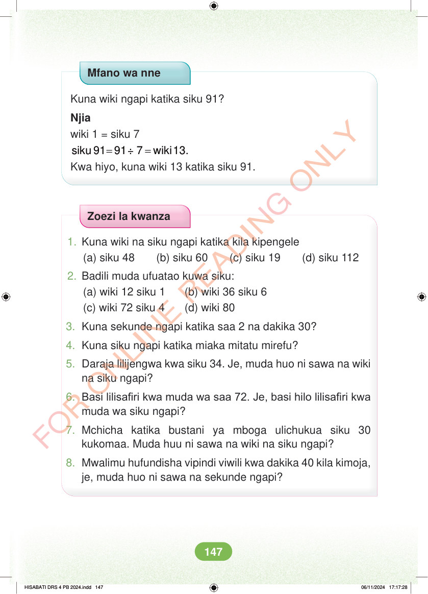

Mfano wa nne Kuna wiki ngapi katika siku 91? Njia wiki 1 = siku 7 = = siku 91 91÷ 7 wiki 13. Kwa hiyo, kuna wiki 13 katika siku 91. Zoezi la kwanza 1. Kuna wiki na siku ngapi katika kila kipengele (a) siku 48 (b) siku 60 (c) siku 19 (d) siku 112 2. Badili muda ufuatao kuwa siku: (a) wiki 12 siku 1 (b) wiki 36 siku 6 (c) wiki 72 siku 4 (d) wiki 80 3. Kuna sekunde ngapi katika saa 2 na dakika 30? 4. Kuna siku ngapi katika miaka mitatu mirefu? 5. Daraja lilijengwa kwa siku 34. Je, muda huo ni sawa na wiki na siku ngapi? 6. Basi lilisafiri kwa muda wa saa 72. Je, basi hilo lilisafiri kwa muda wa siku ngapi? 7. Mchicha katika bustani ya mboga ulichukua siku 30 kukomaa. Muda huu ni sawa na wiki na siku ngapi? 8. Mwalimu hufundisha vipindi viwili kwa dakika 40 kila kimoja, je, muda huo ni sawa na sekunde ngapi? HISABATI DRS 4 PB 2024.indd 147 HISABATI DRS 4 PB 2024.indd 147 06/11/2024 17:17:28 06/11/2024 17:17:28